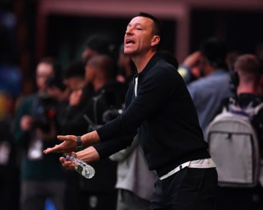

A REAL HIDING
When Real Madrid refused en masse to turn up for last year’s Ballon d’Or ceremony because they knew their man on the shortlist hadn’t won the main award, their snub was widely and correctly perceived to have been an act of the most extreme petulance . And while their players and coaching staff did deign to attend last night’s Copa Gianni semi-final at the MetLife EnormoDome, they certainly didn’t turn up in any meaningful sense of the word and were duly humiliated by Paris Saint-Germain, the Bigger Cup holders Kylian Mbappé famously abandoned last summer to pursue his dream of … winning Bigger Cup. Subjected to the footballing equivalent of being attacked by a swarm of angry bees, Real simply had no answers for PSG’s terrifyingly energetic onslaught across 90 minutes.
By the time nine of them had elapsed, Thibaut Courtois had already made two world-class saves but was helpless to prevent Fabián Ruiz and Ousmane Dembélé spanking two shots past him after capitalising on some comically slapstick defending by Raúl Asencio and Tony Rüdiger. As the German was harried into an embarrassing air-hoof in the face of mild pressure from Dembélé, Football Daily could only hazard a guess at the thoughts going through the famously self-aware Mbappé’s mind. Perhaps a blissfully unironic: “Why weren’t they this tenacious when I played for them?” In the end PSG booked their place in the final courtesy of a 4-0 win that, if anything, flattered their exalted opponents. As the hoary old saw goes, Real Madrid always find a way … even if, on this occasion, it was one that made themselves look like a set of stationary white cones laid out for a PSG training session.
“I leave here with lots of certainties and next year will be different,” said Xabi Alonso, who after just six games in charge of Real knows that in Mbappé and Vinícius Júnior he is both blessed and cursed with two extraordinarily gifted players who steadfastly refuse to do their share of the grunt work. Compare and contrast with each and every member of the PSG squad, who never have to be reminded to clip the hedge, do the laundry or put the bins out. “We didn’t put the brakes on but of course with the heat, with the final in three days’ time, with cramp and the risk of tiredness, you act,” said Luis Enrique after the game, as he appeared to simultaneously confirm and deny that his team had actually taken it easy on Real in the second half.
Asked to explain the key to his team’s success, he highlighted its “insuperable” play. And while it’s not often that the post-match musings of a football manager prompt Football Daily to reach for its trusty Oxford English Dictionary, it came as no surprise to see the definition in question illustrated by a swarm of angry bees. The Spaniard went on to laud the manner in which his players “give everything at the service of the team”, in praise as pointed as a tungsten needle. In a fairytale final pitting two of Europe’s pluckiest underdogs together, PSG must now beat Chelsea to complete an impressive and unprecedented quadruple. “We are going to try,” said Luis Enrique. “One more step against a good team like Chelsea. They perform the whole competition and now it is time for us to prepare, try to recover. [We are] almost there. We want to make history in our club and then take our holidays.” Having consigned so many elite teams to the beach in the past couple of months, it seems only fair PSG get their turn on the deckchairs.
LIVE ON BIG WEBSITE
Euro 2025 continues at pace, with Group A coming to a close tonight. Join Michael Butler for Finland 1-2 Switzerland and Sarah Rendell for Norway 3-0 Iceland (both kicking off at 8pm BST).
QUOTE OF THE DAY
Chelsea did offer me another contract, but I decided to go to Aston Villa because they were in the Championship. And I had an agreement with Villa that if we got promoted that year – we lost in the playoff final to Fulham – that I wouldn’t play against Chelsea the following year in the Premier League. So the two games I would have missed the next year would have been Chelsea, it just wouldn’t have felt right” – Plain Old John Terry tells TalkSport that his Aston Villa contract included a ‘won’t play against Chelsea’ clause.
John Terry, ducking Chelsea by taking a coaching job in the Baller League.Photograph: Ben Whitley/PA
FOOTBALL DAILY LETTERS
“Re John Muller’s story , I was the first head coach of the USL’s Columbus Xoggz in 1994. That year Fifa experimented with the game’s laws and decided that each regional division in the USL would play with its own two modified laws. We played 1993 USL champs Atlanta, at their place, where all throw-ins were now kick-ins! With no offside for throw-ins, we unsurprisingly thumped every one into their box. I believe the final score was 4-2 to the good guys” – Christophe Brown.
“ Luis Enrique denied that PSG took their foot off the gas as his side schooled Real Madrid in the art of attacking football. But it seems someone may have been inclined to spare Real from further punishment. We saw 10 substitutions in the second half. That ought to mean a few minutes of added time (not to mention more time being added for injury stoppages and a cooling break). Yet the referee blew his whistle right on the 90-minute mark. I hope it wasn’t aimed at preventing Madrid’s brand from suffering further embarrassment” – Mark McFadden.
“Perhaps Bryan Evans should also have pointed out to Frankie Dodds and the aforementioned Mr Glendenning that the M1 (Republic of Ireland version) does not ‘become’ the A1 at the border but terminates several kilometres to the south , near the village of Ballymascanlan. From there, the road to the border is officially the N1” – David Mack (and no others).
“Re Wednesday’s Memory Lane [full email edition], Ray Parlour was not being a plonker, he was justly proud that he could afford a waterproof watch (the 1993 equivalent of a Lamborghini and an apartment in Monaco)“ – Robert Blanchard.
Send letters to the.boss@theguardian.com . Today’s prizeless letter o’ the day winner is … Christophe Brown. Terms and conditions for our competitions can be viewed here .
- This is an extract from our daily football email … Football Daily. To get the full version, just visit this page and follow the instructions .